Veeam Tape Monitor
Panel web interno que amplía la visión operativa de Veeam Backup & Replication. Integra los logs y el catálogo de Veeam en una API propia para explicar esperas, seguir el progreso de las copias, preparar rotaciones y gestionar medios de cinta.
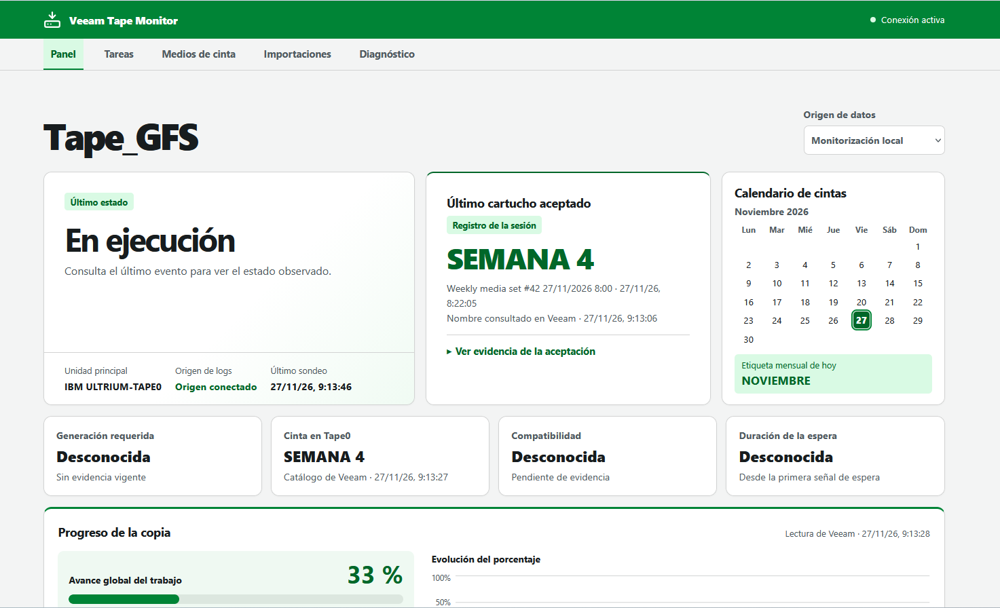
Interfaz operativa
Vista del trabajo en ejecución, el último cartucho aceptado, el calendario y el progreso de la copia.
Ampliar interfaz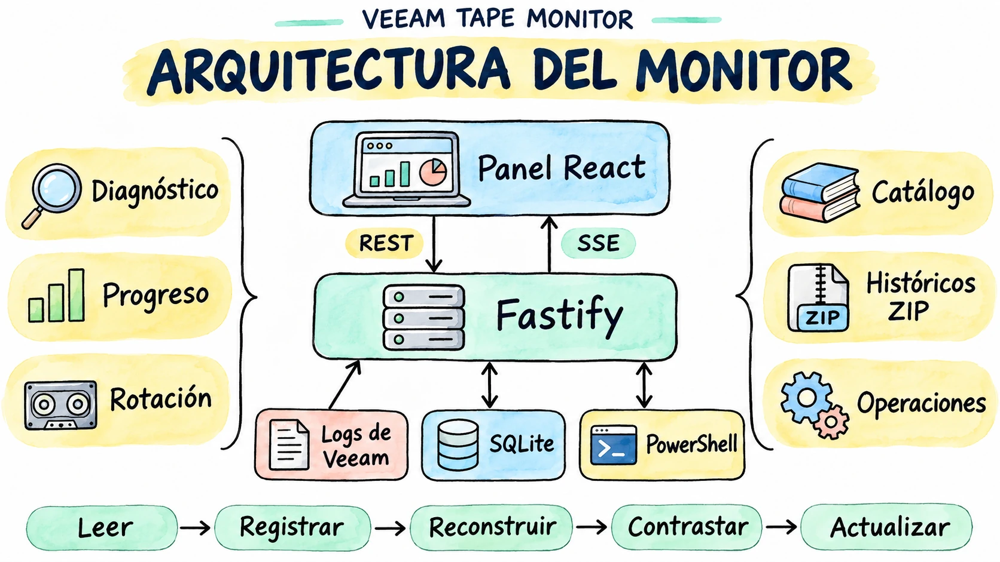
Arquitectura técnica
Recorrido desde los logs y el catálogo de Veeam hasta el panel web.
Ampliar lámina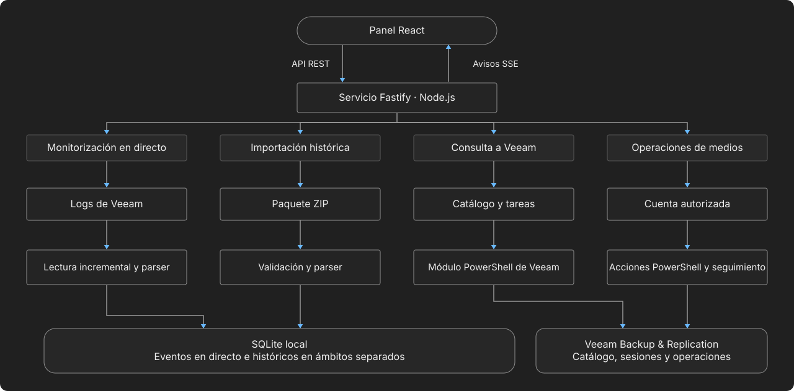
Diagrama general de flujo
Ver diagrama de flujoColección visual
Explora el flujo de datos, el diagnóstico, la gestión de cartuchos y el despliegue. Cada lámina incluye un diagrama de flujo editable.
Arquitectura del monitor
Dos fuentes alimentan el diagnóstico y el catálogo. El panel recibe las vistas mediante REST y las actualizaciones mediante SSE.

Diagnóstico de esperas
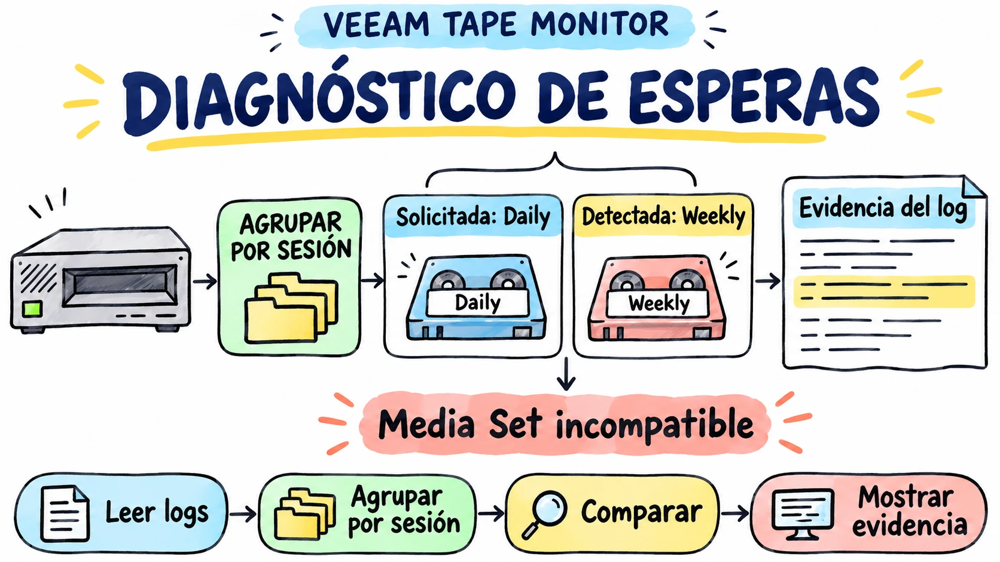
Ampliar láminaEl monitor agrupa señales por sesión y muestra qué tipo de Media Set pidió Veeam, cuál observó y qué evidencia sustenta la conclusión.

Seguimiento de la copia
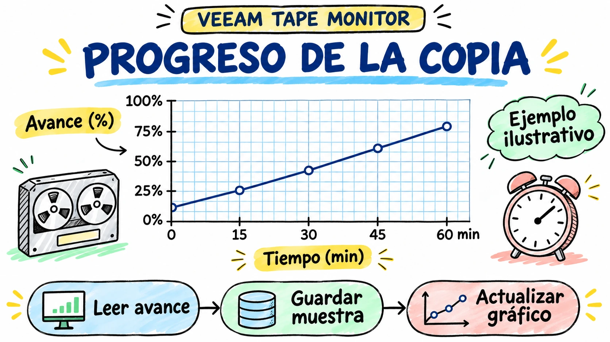
Ampliar láminaLas lecturas del catálogo alimentan la evolución del porcentaje, con el momento de la última consulta.
Catálogo, unidades y cintas
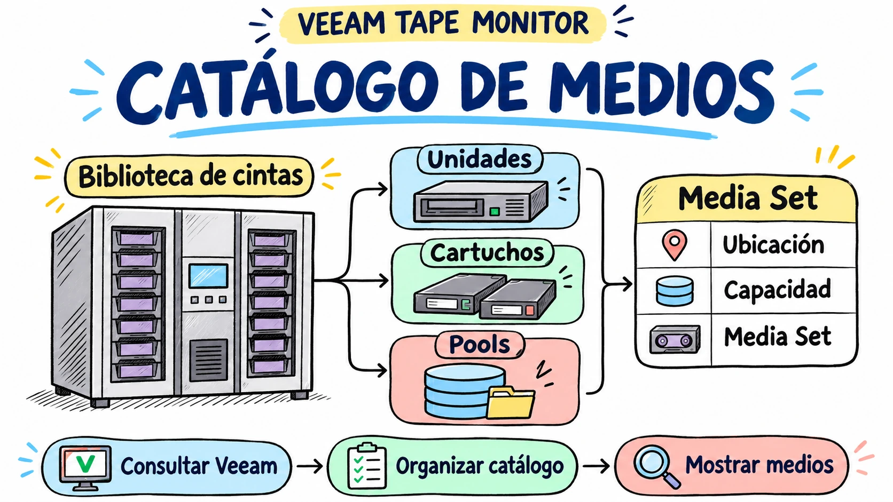
Ampliar láminaLa vista de Medios reúne bibliotecas, unidades, cartuchos y pools, con información de ubicación y capacidad cuando está disponible.

Selección y rotación de cintas
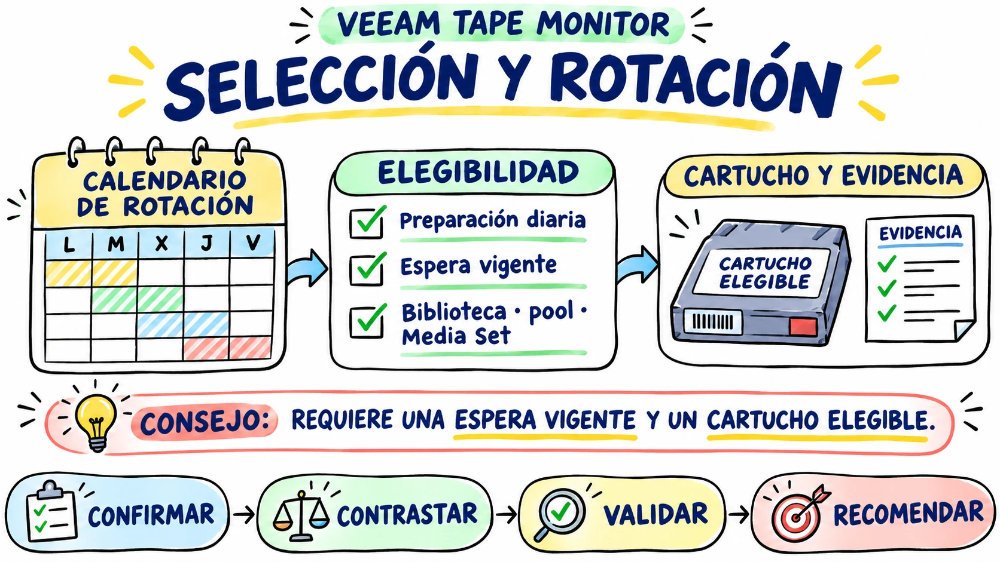
Ampliar láminaLa preparación diaria consulta la programación y las cintas asignadas. Durante una espera, la recomendación exige una solicitud vigente y un cartucho elegible.

Históricos ZIP y evidencia
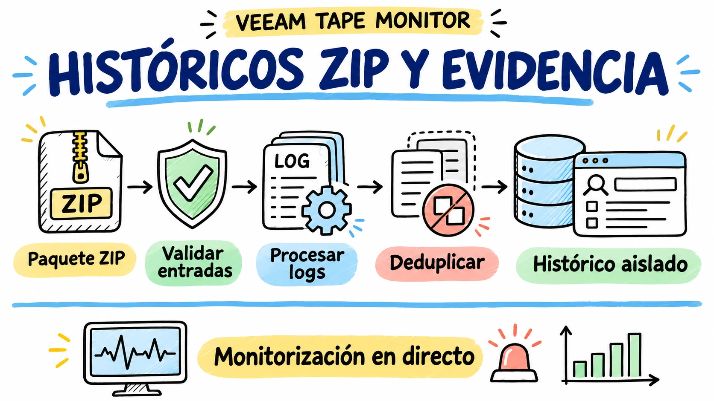
Ampliar láminaCada paquete ZIP se valida y se procesa en un ámbito independiente de la monitorización en directo.

Operaciones de medios
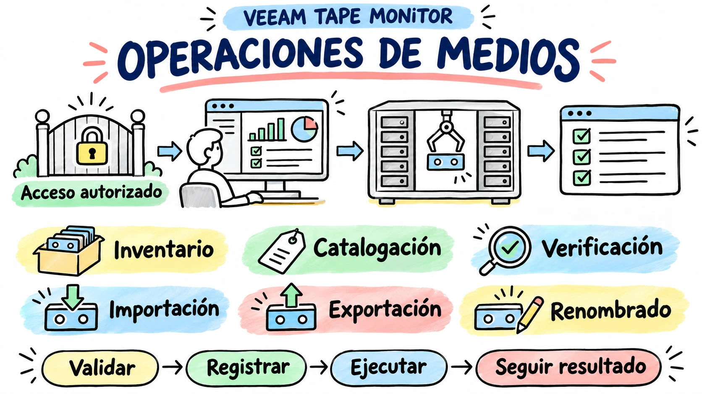
Ampliar láminaEl administrador puede solicitar inventario, catalogación, verificación, importación, exportación o renombrado y seguir el resultado en el panel.


Despliegue y acceso

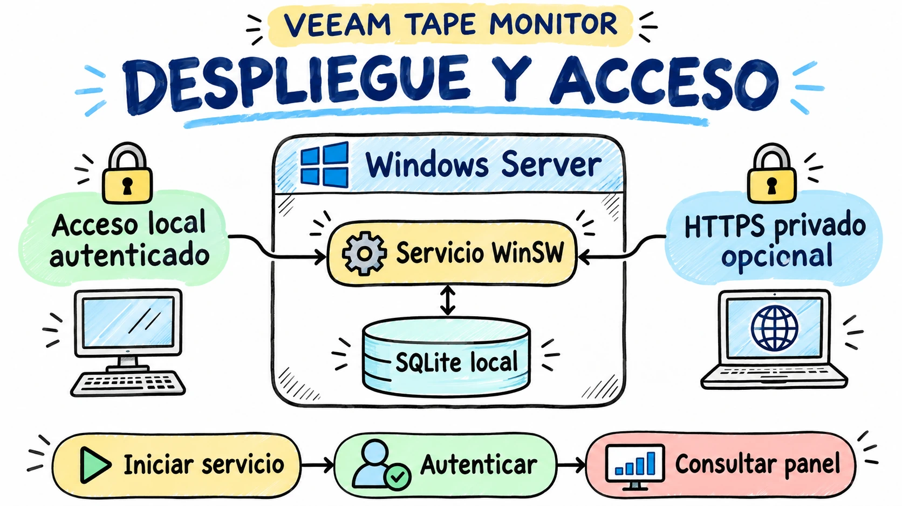
Ampliar láminaUn servicio WinSW ejecuta el monitor en Windows Server. El acceso autenticado puede habilitarse mediante HTTPS en la red privada.
Documentación del portfolio basada en el código y las pruebas del proyecto. El gráfico de progreso de la colección usa datos ilustrativos.
Documentación técnica
Veeam Tape Monitor permite al operador ver qué cartucho pide el trabajo, por qué se ha rechazado el medio montado y qué evidencia respalda el diagnóstico. Combina logs y catálogo de Veeam para seguir el progreso de las copias, preparar la rotación y consultar históricos.
Topología de infraestructura y conexiones
Catálogo de módulos funcionales
src/web/main.tsx
Panel de diagnóstico y progreso
Muestra el estado del trabajo, las esperas, el motivo de rechazo y la evolución de la copia.
src/server/monitor.ts
Lectura incremental de logs
Continúa desde los puntos de lectura guardados y detecta rotaciones o truncados durante el sondeo.
src/server/diagnosis.ts
Reconstrucción de sesiones
Agrupa eventos por sesión, distingue las esperas vigentes y conserva la evidencia de cada conclusión.
src/server/catalog.ts
Catálogo y recomendación
Consulta Veeam y comprueba si un cartucho es elegible para la espera activa.
src/web/tape-calendar.tsx
Calendario de rotación
Muestra el calendario operativo y señala el último viernes del mes para la cinta mensual.
src/server/archive.ts
Importación de históricos ZIP
Valida el paquete, evita duplicados y conserva sus eventos en un ámbito de consulta propio.
src/server/media-operations.ts
Operaciones de medios
Registra la acción solicitada, su ejecución en Veeam y el resultado de la sesión.
src/server/api.ts
API REST y eventos SSE
Expone las vistas del monitor y avisa al navegador cuando cambian los datos.
src/server/store.ts
Persistencia y evidencias
Guarda eventos, checkpoints e históricos en SQLite para poder reanudar la lectura y consultar su origen.
Flujo operativo de diagnóstico
Diagrama general de flujo
El panel React intercambia datos con Fastify mediante REST y SSE. El servicio reúne la lectura de logs, las consultas a Veeam, los históricos ZIP y las operaciones autorizadas.
Ampliar diagrama de flujoReglas de diagnóstico y selección
Confianza del diagnóstico
Distingue una aceptación o rechazo explícitos, una inferencia por contexto y un caso con evidencia insuficiente.
Elegibilidad del cartucho
Cruza biblioteca, pool y Media Set y revisa ubicación, capacidad, retención y protección.
Vigencia de la espera
Retira la recomendación al cerrar la espera, cambiar de sesión o caducar la lectura del catálogo.
Acceso, integridad y trazabilidad
Accesos diferenciados
El acceso local y el HTTPS privado opcional requieren autenticación. Solo la cuenta autorizada puede operar sobre medios.
Validación y ámbito de los ZIP
Comprueba rutas, límites e integridad del paquete, y conserva sus eventos separados de los datos en directo.
Registro de operaciones
Conserva la solicitud y el resultado. Si no se confirma la ejecución, la operación queda indeterminada para revisión.
 TypeScript
Vite
Node.js
Fastify
SQLite
PowerShell
TypeScript
Vite
Node.js
Fastify
SQLite
PowerShell
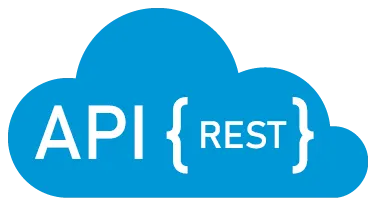
REST · SSE Zod Vitest WinSWAspectos Técnicos Clave
- Lectura incremental y evidencia: los eventos conservan archivo, hora y línea original para explicar la espera.
- Progreso y recomendaciones: las muestras de Veeam alimentan el gráfico y el catálogo valida los cartuchos elegibles.
- Operaciones sobre medios: inventario, catalogación, verificación, importación, exportación y renombrado con seguimiento.